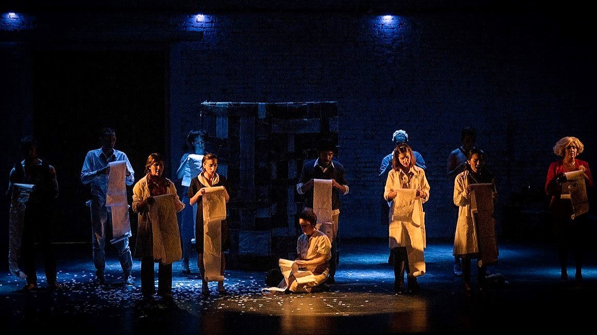

Acerca de la obra
Sinopsis
En medio de la fiesta mundialista y la multitud alborotada, se desarrolla esta "Tragedia Argentina". Personas desesperadas que buscan respuestas durante la última dictadura cívico militar. Personas, que gratamente,prestan sus instalaciones, reciben órdenes, cumplen tareas, obligan a votar y crean aquel lugar de lo desaparecido, donde no hay respuestas porque las preguntas fueron detenidas,electrocutadas, ahogadas. Así un portal va a comunicar dos universos que se revuelven en la memoria.
Elenco
- Clara Carranza Razcon Carra
- Agustina Fernández
- Camila Hidalgo Solís
- Elena Tarabelli
- Jorgelina Olivero Rovira
- Micaela Enrique
- Lucas Bosio
- Ayelén Peralta
- Matias Escobar
- Ignacio Felipe
- Clara Fusari Corfield
- Franco Yanqui